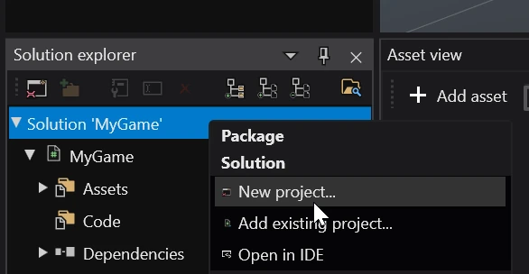
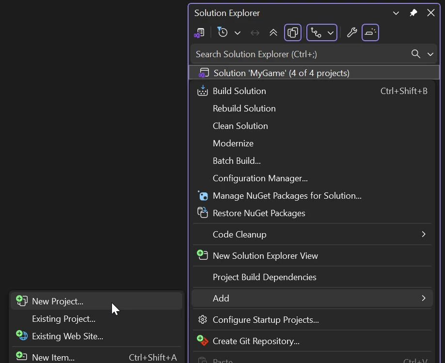
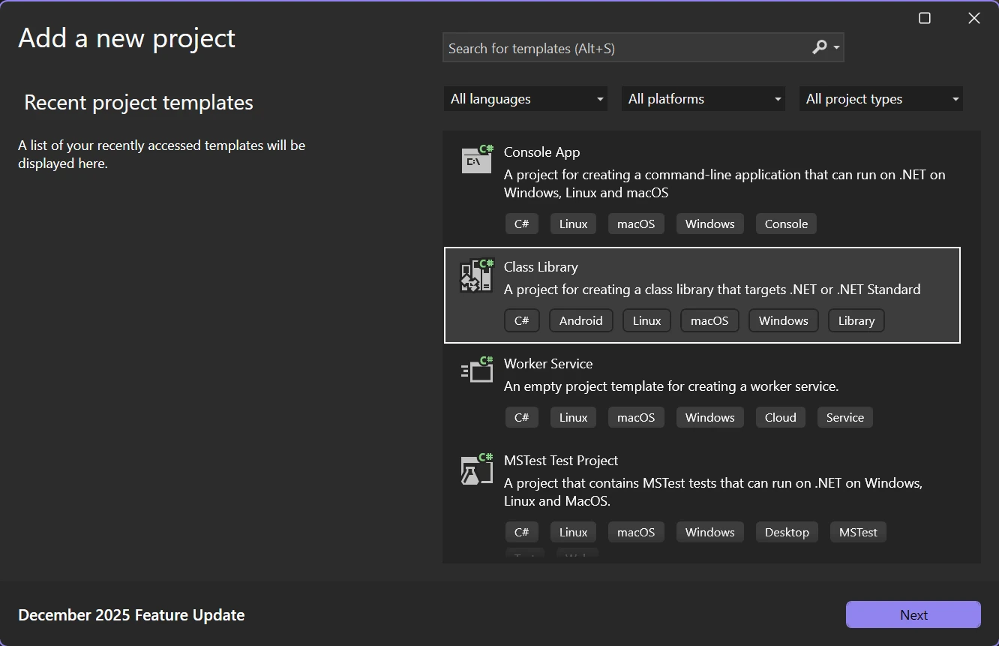
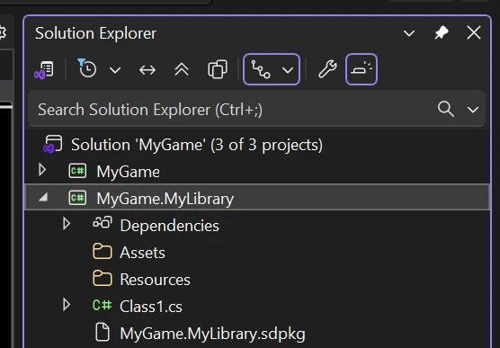

To create a new platform package, in the Solution explorer panel right click on your solution and select New project...

You can select from one of two templates:
New game - creates a new project package for a new game, along with additional platform packages for selected targets.
Code library - a standard empty project package that is meant to be used by other packages for code and assets.
You can create a new platform package in the Solution Explorer panel by right clicking on the solution and selecting Add > New Project...

You will be prompted to select one of the templates provided by Visual Studio. Select Class Library for the C# language.

Give the package a name and then continue through the steps until the package is created.
Note
Make sure to save!
Warning
The created project package will be missing references to Stride libraries. You will have to add them yourself!
Warning
Creating a project package through Visual Studio won't create the .sdpkg file nor the Assets and Resources folders. Make sure to create them yourself!

Here is a template for the .sdpkg file. Change MyGame.MyLibrary to the name of your package. For more information on how to configure this file, visit the package properties page.
To properly support asset compilation, add a reference to the Stride.Core.Assets.CompilerApp package.
<PackageReference Include="Stride.Core.Assets.CompilerApp" Version="ENGINE VERSION HERE" IncludeAssets="build;buildTransitive" />
If your IDE of choice isn't included on this page, you can create a new project package from the terminal instead via the dotnet command.
dotnet new classlib --name MyGame.MyLibrary
You will also need to add it to your project's solution file.
dotnet sln add MyGame.MyLibrary
Warning
The created project package will be missing references to Stride libraries. You will have to add them yourself!
Warning
Creating a project package through the command line won't create the .sdpkg file nor the Assets and Resources folders. Make sure to create them yourself!
Here is a template for the .sdpkg file. Change MyGame.MyLibrary to the name of your package. For more information on how to configure this file, visit the package properties page.